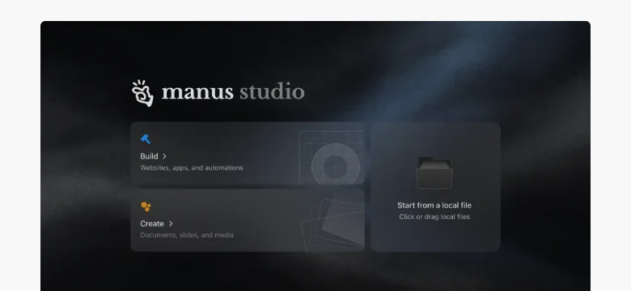
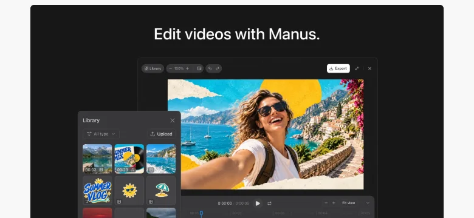
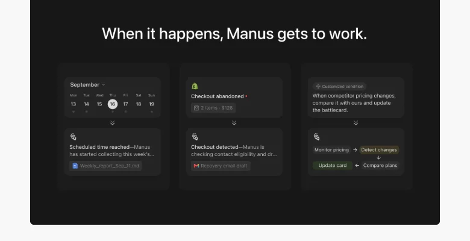
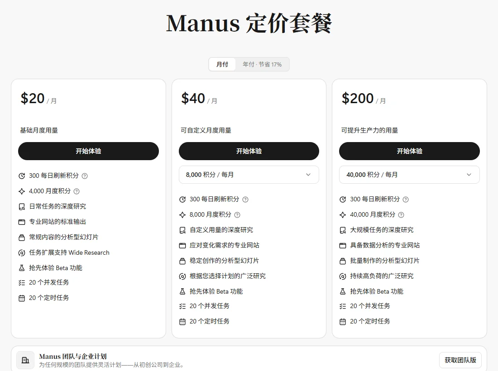

ManusButterfly Effect（蝴蝶效应）
通用智能体的代表产品：被 Meta 以 20 亿美元收购、又被中国监管叫停，10 月以独立公司身份融资 5 亿美元；9 月发布 Manus 2.0，从“完成任务”走向“做出作品”。
一页结论
- 一年里经历收购与反转：2025 年底 Meta 宣布以超过 20 亿美元收购；2026 年 4 月中国国家发改委禁止该交易并要求撤回；8 月宣布恢复独立运营，10 月完成超 5 亿美元融资S5S6S8S7
- 收入增长快：收购时年化收入超过 1.25 亿美元，最新报道约 5 亿美元（均为年化口径，非审计收入）S5S7
- Manus 2.0 转向“做作品”：9 月 28 日发布新一代 Agent 框架 Cascade、桌面工作室 Manus Studio（含视频剪辑与游戏开发）、事件触发的自动化和专属云电脑S3
- 通用 Agent 的全栈形态：网页、桌面、手机三端；云端浏览器与虚拟机执行任务，桌面端可直接操作本地文件；支持定时与事件触发S4S3
- 模型开放：9 月 30 日推出 Manus Flex，可接入用户自己的模型 API 密钥S4
01公司介绍
02公司战略
Manus 押注“通用 Agent”：不限定场景，用一套能力覆盖调研、文档、网站、视频、游戏和自动化。
- 从任务到作品：Manus 2.0 把桌面端升级为 Manus Studio，“人与 AI 共用的工作空间”，并为视频、游戏提供专业编辑环境S3
- 自研 Agent 框架降成本：新一代框架 Cascade 按需加载能力，官方测试配置中 token 少用 23.2%、耗时少 28.2%、成本低 32%S3
- 从定时到事件驱动：自动化可由邮件、广告数据变化、日历、Slack 消息、Notion 更新等事件触发S3
- 生态合作：与 Similarweb、Shopify 等平台合作，把专业数据和电商能力接进对话S4
03产品定位
| 项目 | 内容 |
|---|---|
| 一句话定位 | “Less structure, more intelligence”，自主执行复杂任务的通用 Agent 平台S1S9 |
| 目标用户 | 个人用户、创作者、小团队与企业；提供团队版、SSO 与 APIS1 |
| 核心场景 | 做幻灯片、建网站、做游戏、做视频、深度调研、自动化工作流S1S3 |
| 对标对象 | 官网直接列出与 ChatGPT、Lovable、Replit 的对比S1 |

04产品与主要功能
Manus 的特点是“云端执行 + 多种创作环境”：每个任务都在云端的虚拟机和浏览器里跑，结果可以是文档、网站、视频，也可以是一个持续运行的自动化。
产品架构
交互入口
网页Manus Studio 桌面端手机 App（可远程控制桌面）Slack 集成APICue（个人 Agent 应用）
Agent 层
Cascade 自研 Agent 框架Wide Research 并行调研Branch 平行会话定时任务与事件自动化
创作环境
文档、表格、PDF、幻灯片网站与代码Video Editor（含 Alchemy 创意总监模式）Game Dev
模型与扩展
运行环境
云端虚拟机与浏览器Cloud Computer（专属、全天候）My Browser桌面端“我的电脑”访问本地文件
安全与管控SOC 2 Type I / IIISO 27001ISO 27701团队版与 SSO
核心功能


图片来自 Manus 2.0 官方发布文章，2026-11-02。
12 项能力评估
终端 CLI无或未说明未见命令行工具
代码审查无或未说明未见相关产品
05商业模式
按积分订阅，三档月费对应不同积分量；高档位可自选积分额度。

| 档位 | 月费 | 包含 |
|---|---|---|
| 基础 | $20 | 每月 4,000 积分 + 每天 300 刷新积分；20 个并发任务、20 个定时任务S2 |
| 自定义 | $40 起 | 每月 8,000 积分起，可自选用量S2 |
| 高用量 | $200 | 每月 40,000 积分，适合批量生产S2 |
| 团队与企业 | 按需 | 团队版、SSO、APIS1S2 |
| Cloud Computer | 额外付费 | 专属云端环境需另行购买S3 |
收入特点：收入主要来自个人与小团队订阅，按积分消耗计费。积分制让复杂任务（视频、游戏、大规模调研）多付费，但也让用户难以预估成本（分析意见）。
06上下游与渠道
上游：模型
多家第三方大模型（具体供应商未公开披露）用户可通过 Manus Flex 接入自己的模型密钥S4
上游：算力与云
云端虚拟机与浏览器基础设施（供应商见信任中心的分包商列表）S10
Manus
网页、Studio 桌面端、手机、API
渠道
下游客户
个人与创作者中小团队与企业
07市场表现
08用户口碑
以下来自 Hacker News 与媒体报道中的用户反馈（C / B 级来源，只反映情绪）。
09安全合规
10近期动态
11潜在风险分析意见
| 风险 | 表现 | 可能程度 |
|---|---|---|
| 地缘与监管 | 收购被以国家安全理由叫停，未来的海外资本合作与上市路径受限S6 | 高 |
| 模型依赖 | 不自研基础模型，依赖第三方模型供给与价格S4 | 中 |
| 大厂挤压 | ChatGPT Work、Claude Cowork 等模型厂商的同类产品自带模型优势与用户池 | 高 |
| 客户信任 | 资本归属反复，部分客户对数据归属有顾虑S5 | 中 |
| 成本可预期性 | 积分制按任务消耗，复杂任务成本难以预估（分析意见） | 中 |
“可能程度”为基于现有公开信息的判断，不是量化预测。
12综合结论分析意见
优势
- 通用 Agent 的品牌认知与先发优势
- 收入增长快，产品迭代密集
- 创作环境丰富：视频、游戏、网站一站完成
劣势
- 不掌握基础模型
- 资本与监管的不确定性
机会
- 从工具变成“作品工作室”，切入创作者市场
- 事件驱动自动化切入企业工作流
威胁
- 模型厂商自带 Agent 产品的挤压
- 跨境监管
对 AI 产品团队的启示
- 不做模型也能做出大收入，但护城河要另找：Manus 靠 Agent 框架、交互和创作环境建立差异，自研框架 Cascade 直接降低成本。
- 按需加载能力是降本关键：把所有工具塞进每个任务会又慢又贵，按项目需要加载能力，效率和成本都会改善。
- 从“完成任务”到“交付作品”：可编辑的时间线、可手改的游戏资源，让用户能接手 AI 的半成品，比一次生成更有用。
- 资本与监管是产品的一部分：跨境团队的融资和并购可能被政策改写，产品规划要预留应对空间。
信息缺口
以下信息未找到可靠的公开来源，本报告不做推测。
- Manus 当前使用的底层模型供应商（官网未公开）
- 用户数与付费用户数（只有“数百万”的表述）
- 最新一轮融资的估值
- Cloud Computer 的官方定价（第三方报道为每月加 $30 或 $50）
来源
A 官方 · B 权威媒体或第三方 · C 社区（仅用于口碑与线索）。访问日期均为 2026-11-02。
- S1 · AManus 官网Manus
- S2 · AManus 定价Manus
- S3 · AIntroducing Manus 2.0Manus 博客 · 2026-09-28
- S4 · AManus UpdatesManus · 2026-01 至 2026-09
- S5 · BMeta's $2B Manus deal pushes away some customers sad it happenedCNBC · 2026-01-21
- S6 · BChina Blocks Meta's $2 Billion Acquisition of AI Firm ManusBloomberg · 2026-04-27
- S7 · BChina's Manus raises over $500M in first funding round since split with MetaTechCrunch · 2026-10-08
- S8 · CManus will return to operating as an independent companyHacker News · 2026-08-11
- S9 · CHacker News 讨论：中国叫停收购 / 恢复独立运营Hacker News · 2026-04 至 2026-08
- S10 · AManus Trust CenterManus
- S11 · BWhy Meta bought Manus — and what it signals for your enterprise AI agent strategyVentureBeat · 2026-01
- S12 · BManus seeks $4B valuation in new $500M fundraise as it resumes independent opsTechCrunch · 2026-09-18